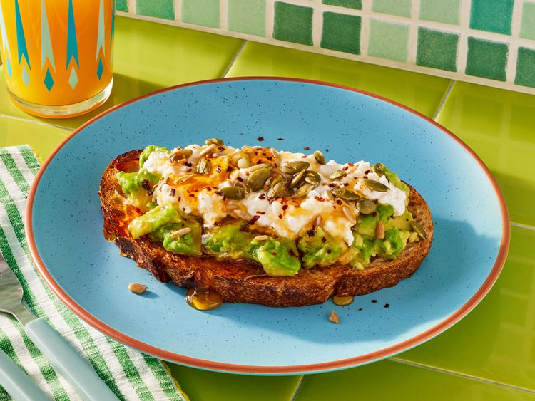

Home
The Best Avocado Toast

Ingredients
- 1 slice sourdough bread, toasted
- 1/2 ripe avocado, smashed
- 1/3 cup cottage cheese
- 1 tablespoon sunflower nuts and/or roasted pumpkin seeds
- 1/2 teaspoon honey
- 1/8 teaspoon crushed red pepper flakes
- salt and freshly ground black pepper to taste
Directions
Step 1
Assemble the avocado toast by smashing and smearing the avocado onto the toast.
Step 2
Top with cottage cheese, then sprinkle with nuts/seeds, crushed red pepper flakes, salt and pepper to taste, and a drizzle of honey. Serve immediately.